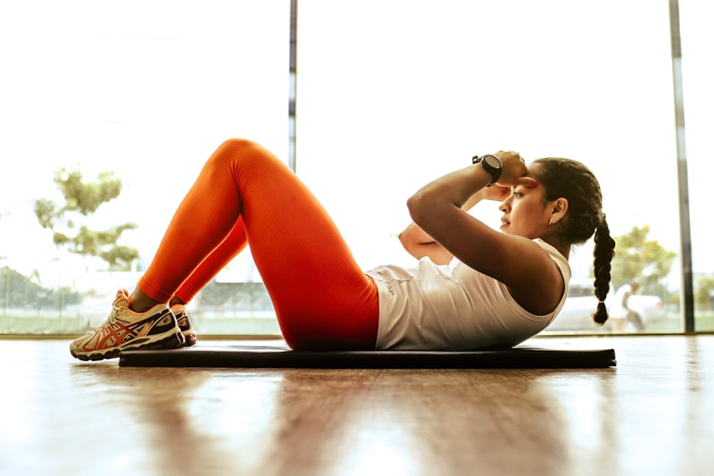

الحركة اليومية البسيطة أهم من ساعة واحدة بالنادي
مش لازم نظام رياضي معقّد أو ساعات طويلة بالجيم. هاي المدونة تحكي عن عادات صغيرة وواقعية — مشي، نوم، تمدد، أكل بسيط — تقدر تطبقها وسط زحمة يومك وتشوف فرق حقيقي على المدى الطويل.
اقرأ المقال ←
أحدث المقالات
22 مقال٧ عادات يومية بسيطة لتحسين لياقتك بدون نادي رياضي
خطوات صغيرة تقدر تدمجها بروتينك اليومي بدون ما تحتاج اشتراك أو معدات.
ليش النوم أهم عامل بتجاهله بخطتك الرياضية
العلاقة بين جودة نومك وسرعة تعافي عضلاتك وتحسن مزاجك ونشاطك.
البروتين بدون تعقيد: كمية بسيطة تكفيك يوميًا
دليل مختصر وواقعي لحساب احتياجك من البروتين بدون حاسبات معقدة.
روتين تمدد ٥ دقائق تقدر تسويه أول ما تصحى
تمارين بسيطة تفك تيبس الجسم وتحضّرك ليومك بدون أي معدات.
كيف تقلل التوتر اليومي بـ ٣ عادات بسيطة
أدوات عملية للتعامل مع ضغط اليوم بدون ما تحتاج ساعات تأمل.
هل فعلاً تحتاج ٨ أكواب ماء يوميًا؟ الحقيقة العلمية
نفكك الرقم الشائع ونشرح كيف تعرف احتياجك الحقيقي من الماء.
روتين صباحي بسيط يغيّر شكل يومك بالكامل
خمس خطوات صغيرة أول نص ساعة من يومك تبني بداية يوم مختلفة تمامًا.
قيلولة ٢٠ دقيقة: السر اللي يرجع لك طاقتك نص اليوم
كيف تسوي قيلولة قصيرة فعّالة تسترجع طاقتك بدون صداع
فطور صحي بخمس دقائق بدون طبخ
أفكار فطور بسيطة ومغذية تجهزها بأقل من خمس دقائق
مشي ١٥ دقيقة بعد العشاء: عادة صغيرة بفائدة كبيرة
ليش المشي بعد العشاء تحديدًا مفيد لهضمك ونومك
ليش ظهرك يوجعك آخر الدوام؟
أخطاء شائعة بوضعية الجلوس وكيف تصححها بخطوات بسيطة
السكر المخفي: أطعمة تحسبها صحية وفيها سكر كثير
منتجات شائعة تسوق نفسها صحية لكنها محملة بسكر مضاف
تمرين تنفس ٤-٧-٨: أداة سريعة تهدي أعصابك
تقنية تنفس بسيطة تقلل التوتر فورًا بأي وقت ومكان
٥ تمارين منزلية بدون أي معدات تكفي جسمك كامل
روتين تمارين بسيط تسويه بغرفتك بدون أوزان
القهوة: كم فنجان يومي مفيد، ومتى تصير مضرة؟
الجرعة المناسبة من الكافيين وأفضل وقت لشربها
روتين مسائي بسيط يحضرك لنوم أعمق
خطوات قبل النوم بنص ساعة تساعدك تنام أسرع
فيتامين د وأشعة الشمس: كم دقيقة تحتاج فعليًا؟
الوقت المناسب للتعرض للشمس بدون ضرر للبشرة
الصيام المتقطع: هل يناسب فعلاً كل شخص؟
نظرة واقعية على الصيام المتقطع ولمين يناسب
آلام الرقبة من الجوال: كيف تحمي نفسك
لماذا النظر المستمر للجوال يسبب آلام الرقبة
الأكل الواعي: كيف تاكل أقل بدون حرمان
تقنية الأكل الواعي وكيف تتحكم بكمية أكلك طبيعيًا
السباحة: رياضة كاملة بأقل ضغط على المفاصل
فوائد السباحة الجسدية والذهنية لأعمار مختلفة
كيف تبني عادة رياضية تدوم أكثر من شهر؟
الأسباب الحقيقية وراء ترك أغلب الناس للرياضة